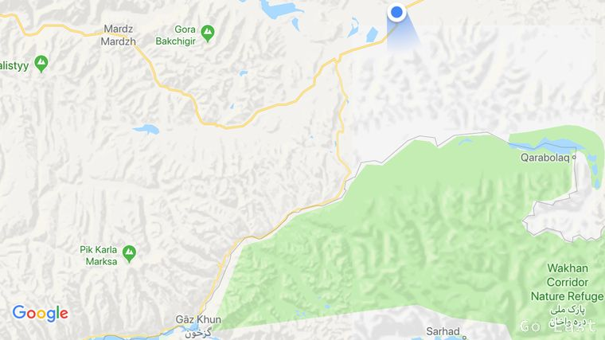
Schraubencheck am Morgen und die Gepäckträgerverschraubung wird nachgezogen. Hinterreifen hat nur 0,7 bar und wird mit ausgeliehener Pumpe auf 2,0 bar aufgepumpt.
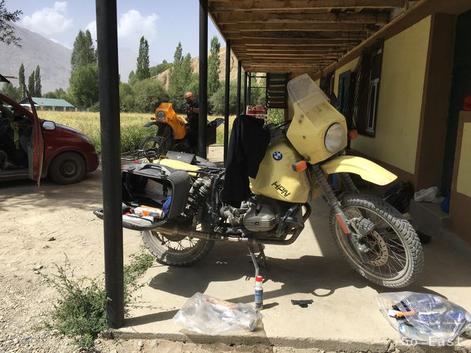
Wir lassen uns Zeit und nach dem Frühstück brechen zuerst Andre und Martin auf, während wir noch schrauben.
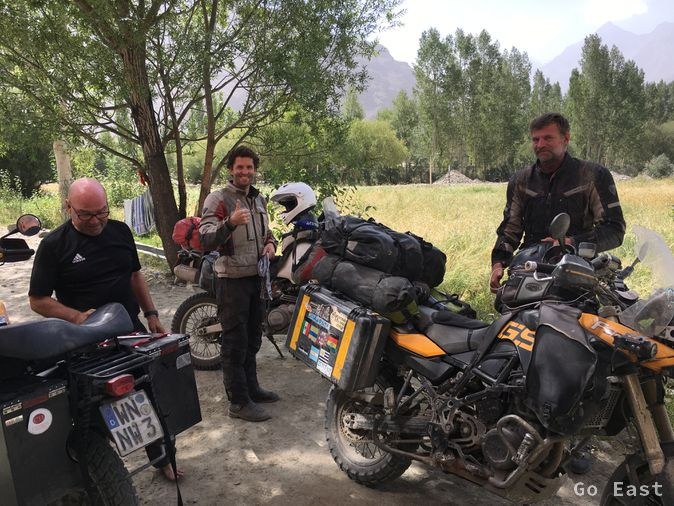
Kurze Zeit später kommt Martin zurück, da er sich einen Platten eingefahren hat.
2 Autos von der Mongol-Rally treffen auch ein. 4 Leute aus Australien in einem Wagen. Wir halten ein kurzen Schwätzchen.
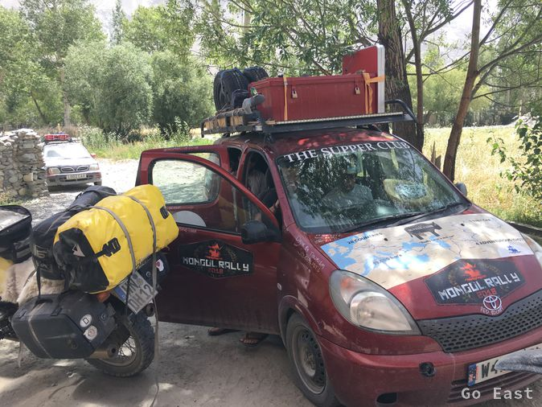
Nach dem Schrauben nehmen wir Martin mit zur Tanke, wo man auch Reifen flicken lassen kann. Getankt wird aus dem Gazprom Fass und eingefüllt mit der 10 Liter Kanne und Trichter. Wir nehmen jeder 20 l, um nicht zu schwer zu sein, da die Strecke sehr schlecht sein soll.
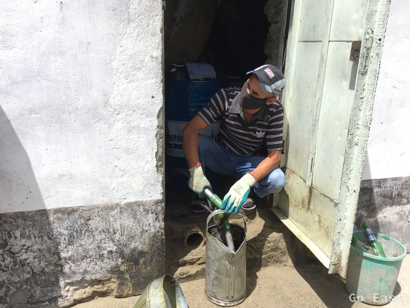
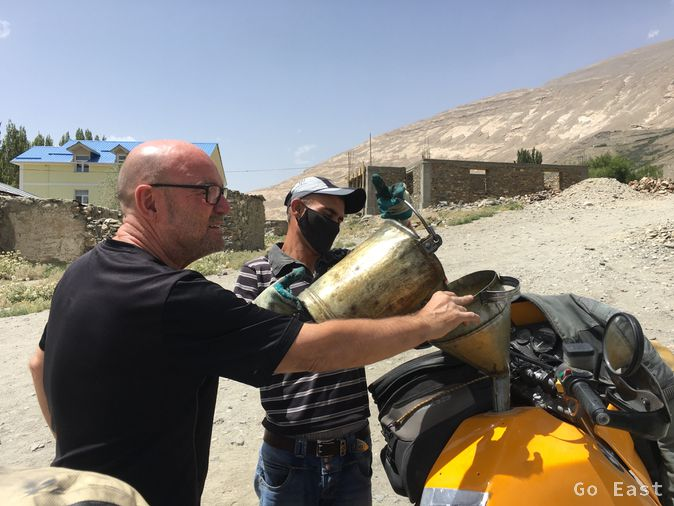
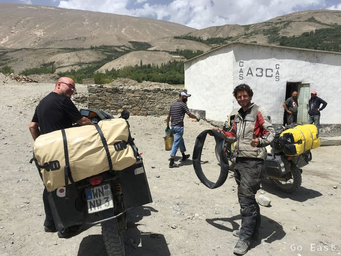
Wir brechen auf und es fängt gleich gut an mit steilen Haarnadelkurven mit Geröll. Es geht stetig bergan und nach 20km und 1 Std später treffen wir Andre. Wir berichten ihm die Lage und er beschließt, zurück zu fahren und morgen dann nochmals mit Martin zu starten.
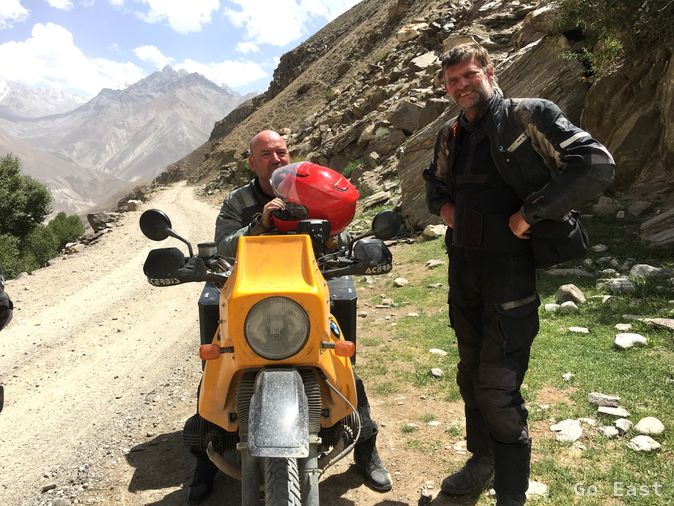
Die Strecke ist sehr anstrengend und wir machen mehrmals Pause. Wellblechpiste, Geröll, weicher Schotter wechseln sich ab und gibt es auch in Kombination. Wir folgen weiterhin flussaufwärts dem Pandsch.
Vögel und Insekten gibt auf 3.600m Höhe. Visier halte ich geschlossen, da immer noch größere Insekten unterwegs sind.
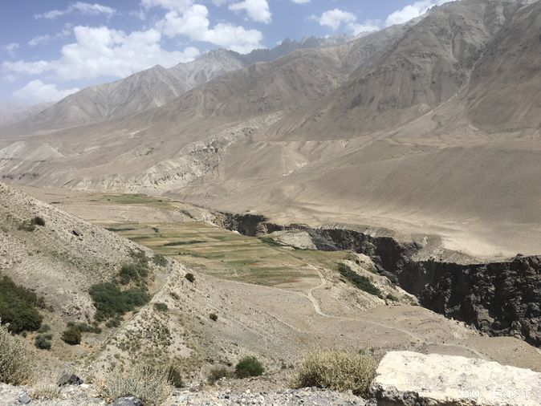
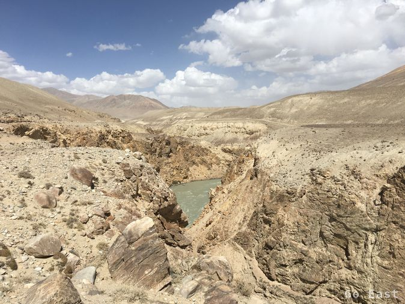

An einer weichen Stelle kann ich nicht schnell genug einem Sandhügel ausweichen und bleibe mit dem linken Zylinder hängen. Ich mache eine elegante Linkskurve auf der Stelle und das Motorrad liegt im Sand. Da Charlie schon weitergefahren, lade ich das gesamte Gepäck ab, um die Maschine aufzurichten, was mir schließlich auch gelingt. Charlie ist mittlerweile zurückgekehrt und so wird gemeinsam die Maschine wieder beladen. So kann es gehen, wenn man einen kurzen Kontrollverlust hat.
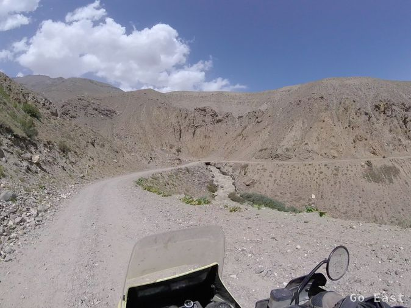
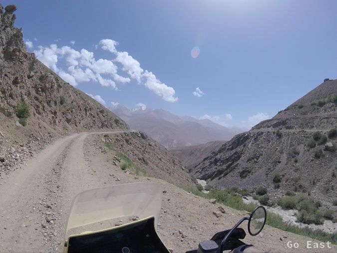
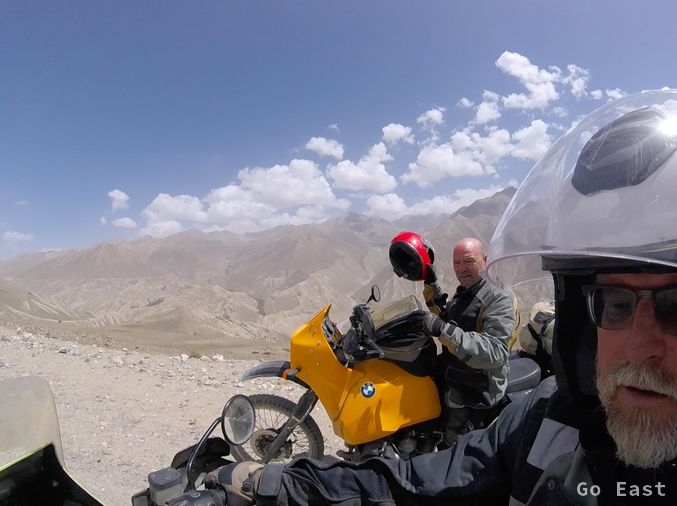
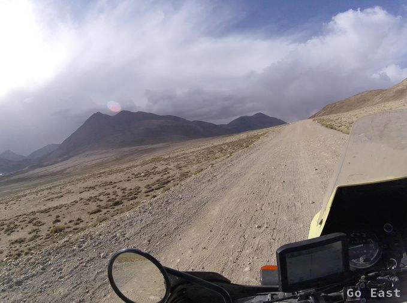
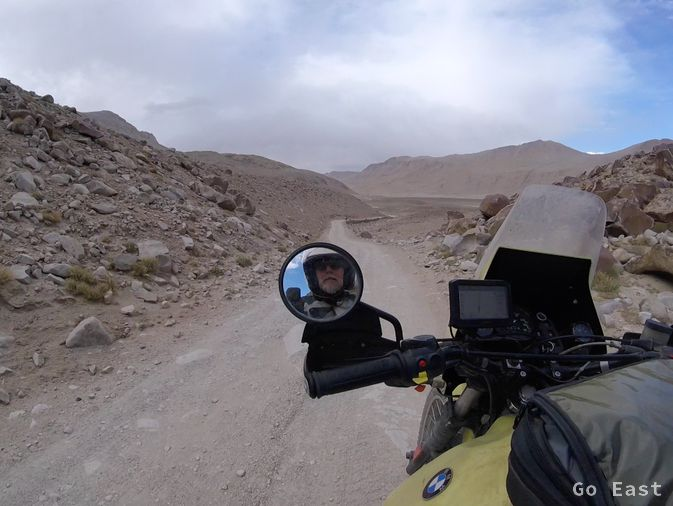
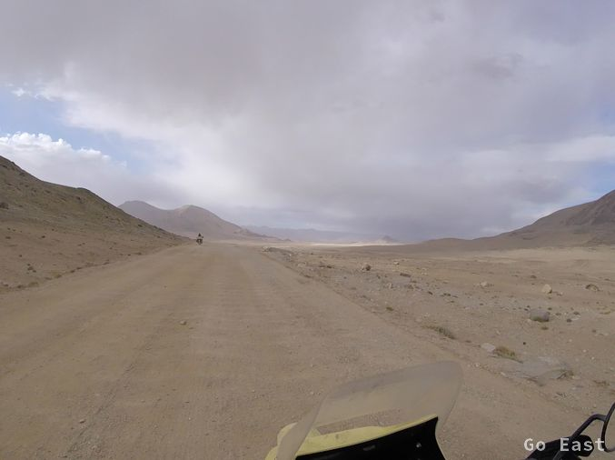
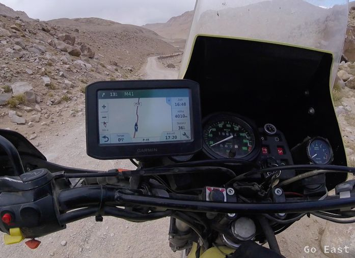
Nach geraumer Zeit erreichen wir einen Kontrollposten, der die Pässe erfasst. Wir sind jetzt auf 4.200m und die Temperatur ist auf 20 Grad gefallen. Wir schwenken nun Richtung Norden und verlassen nun nach etlichen 100km den Pandsch der weiter aus dem Osten kommt. Wir begegnen Rindern mit Hirten in dieser Höhe und zwei Radler aus Leibzig, die nach Duschanbe radeln wollen.
Die Jacken werden zugemacht und wir stellen fest, dass die Reissverschlüsse mit Staub zugesetzt sind und sich kaum noch bewegen lassen. Nach dem Pass steigen wir langsam ab auf 3.800m bei vermindert schlechter Piste bis wir die Teerstraße M41 erreichen.
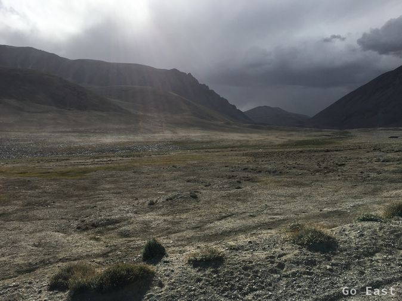
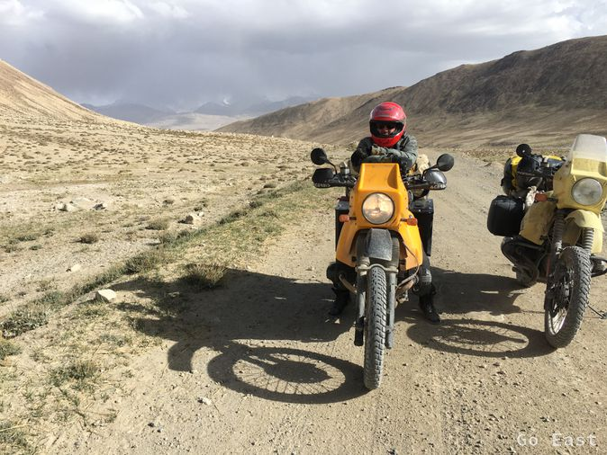
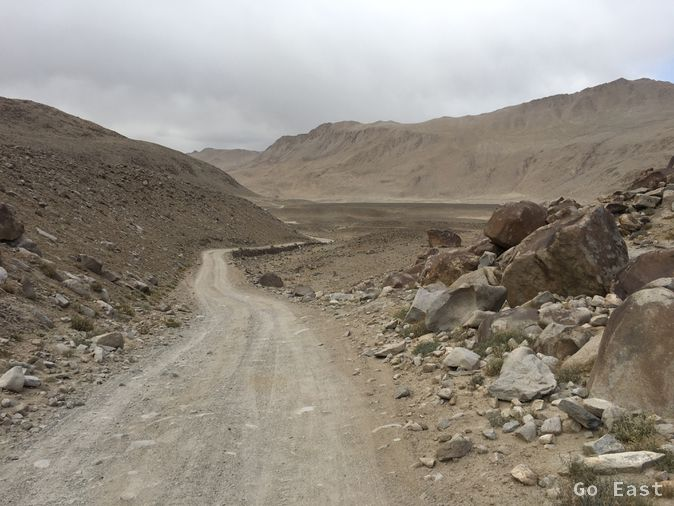
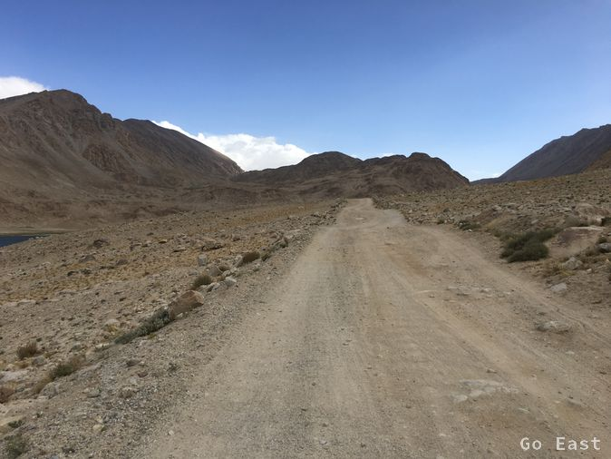
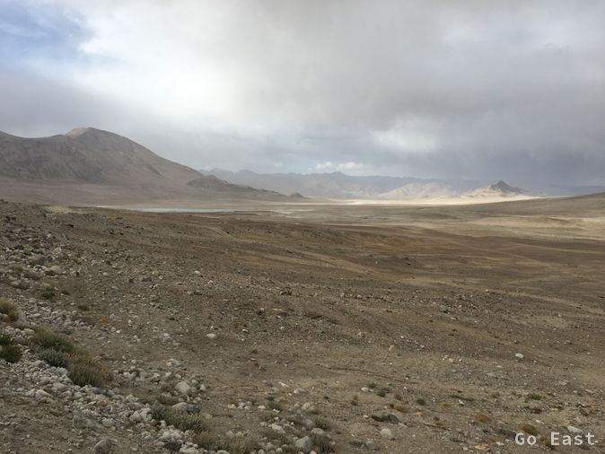
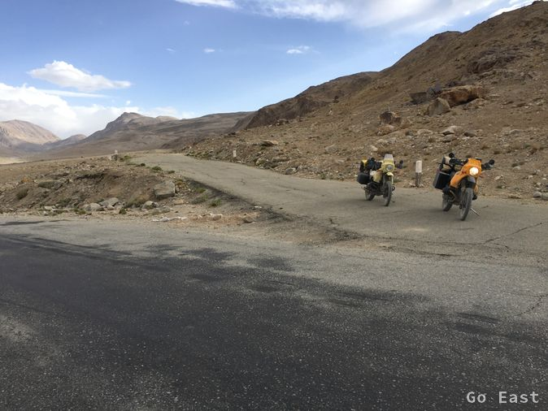
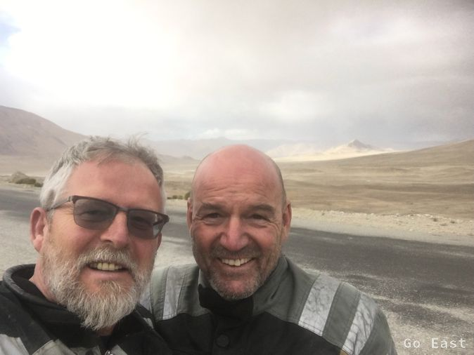
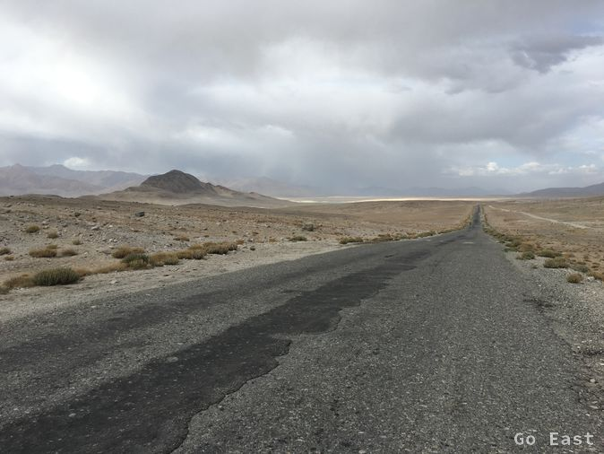
Die 100 km Piste hat uns 6 Std beschäftigt. Kurz überlegen wir, ob wir die verbleibenden 120km bis Murghab durchstarten sollen. Leider lässt die Teerstraße bestenfalls einen Schnitt von 50km/h zu, da sie starke Bodenwellen aufweist.
Das verbleibende Tageslicht würde nicht bis Murghab reichen und so steuern wir das nächste ‚homestay‘ an. Es gibt Bett, Dusche, Dinner und Frühstück für 15,- USD. Toilette (outhouse) über dem Hof. Dusche mit Wassertank und Schöpfkelle, Bett entfällt und wird ersetzt durch Matratze auf dem Boden. Auch gut. Es gibt mal wieder Suppe, Schaf, Fisch und Bier. Mehr braucht es nicht. Wir sind fertig wie Brot. Um 20:00 ist Bettruhe.
Kein WiFi, Kein Netz, kein posten, kein Aufladen, Strom gibt es nur aus der 12V Batterie und Solarpanels.
Die Höhe von 3.800m macht uns etwas zu schaffen. Beim Weg zum outhouse in der Nacht (Wellblechverschlag mit Bretterboden und Loch im Boden), schwingt immer die Angst mit, dass das Smartphone, das als Taschenlampe dient, auch reinplumpst. Allein der Gedanke daran, macht einen hellwach und hochkonzentriert. :-)
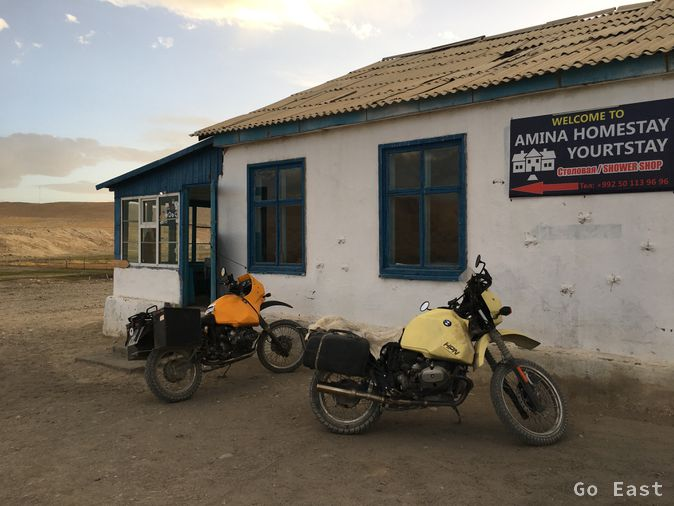
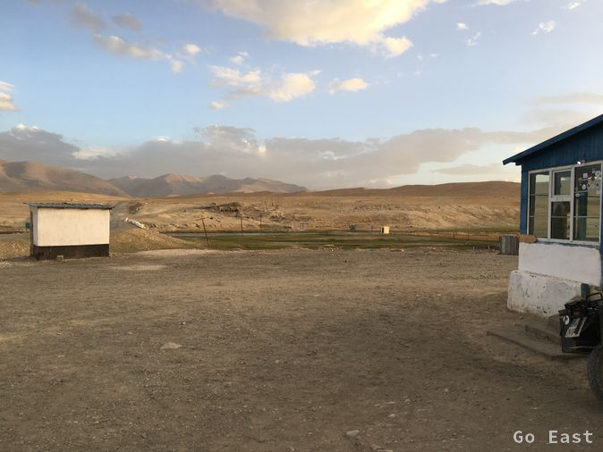
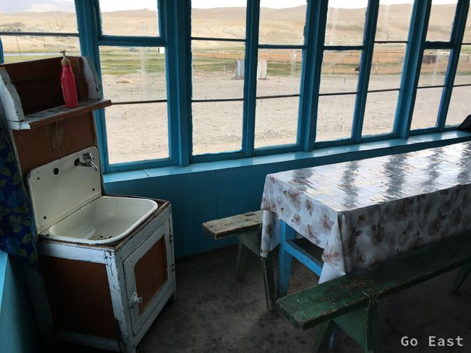
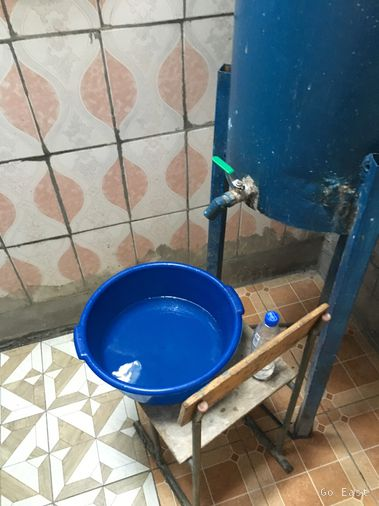
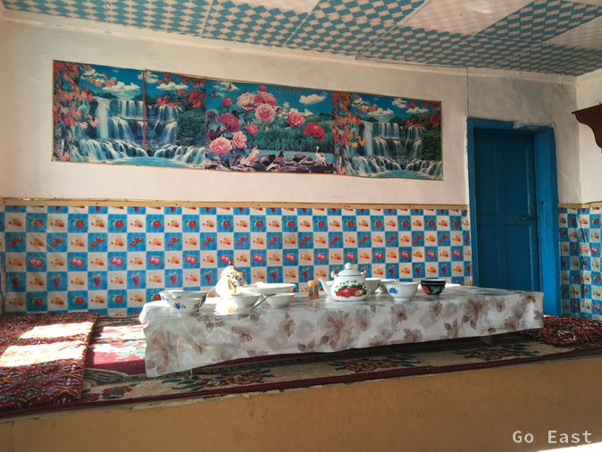